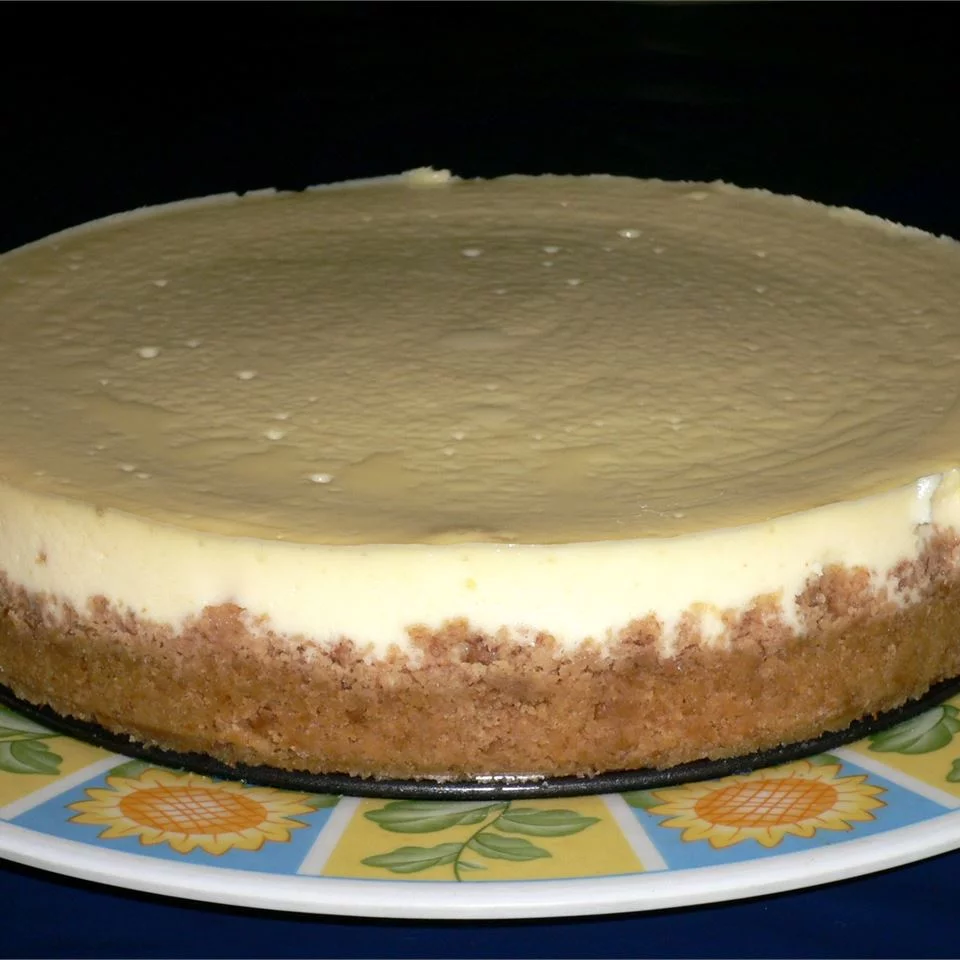

Cheesecake

Description
This rich, thick cheesecake can be prepared for serving by itself or with a variety of delicious choice toppings like fresh sliced strawberries.
- 1.5 cup graham cracker crumbs
- 3 tbsp white sugar
- .5 tsp ground cinammon
- .25 cup margarine
- 24oz cream cheese
- 1.5 cup white sugar
- 4 eggs
- 2tsp vanilla extract
- .25 tsp salt
- 2 cups sour cream
Steps
- Preheat oven to 350 degrees F (175 degrees C). In a medium bowl, combine graham cracker crumbs, 3 tablespoons sugar, cinnamon and melted margarine. Mix all ingredients well and press into bottom and sides of a 9 inch springform pan.
- In a large bowl, beat cream cheese and sugar until smooth. Blend in the eggs one at a time, then stir in the vanilla and salt. Fold in the sour cream.
- Pour batter into springform pan. Bake in preheated oven for 1 hour. Turn off oven and leave cake in for at least 30 minutes.
Thanks to Mary at All Recipes for this recipe to practice my html coding!
https://www.allrecipes.com/recipe/17861/moms-cheesecake/